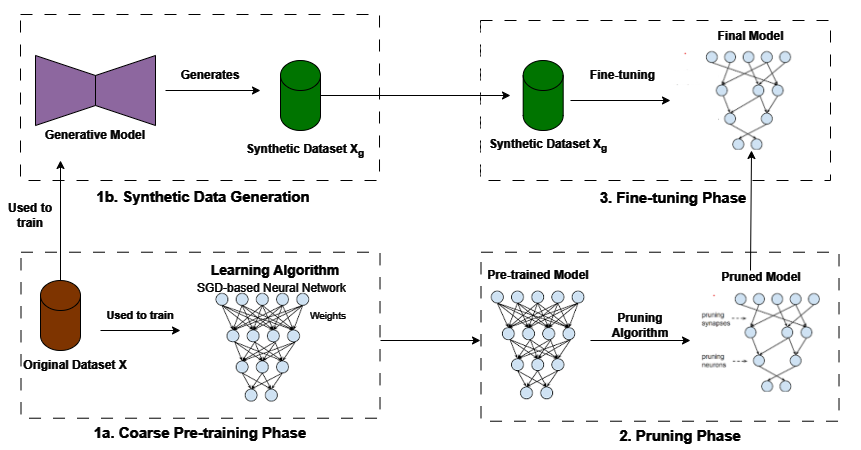
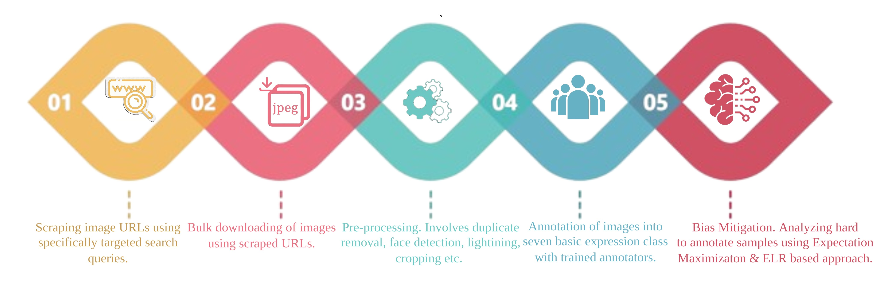
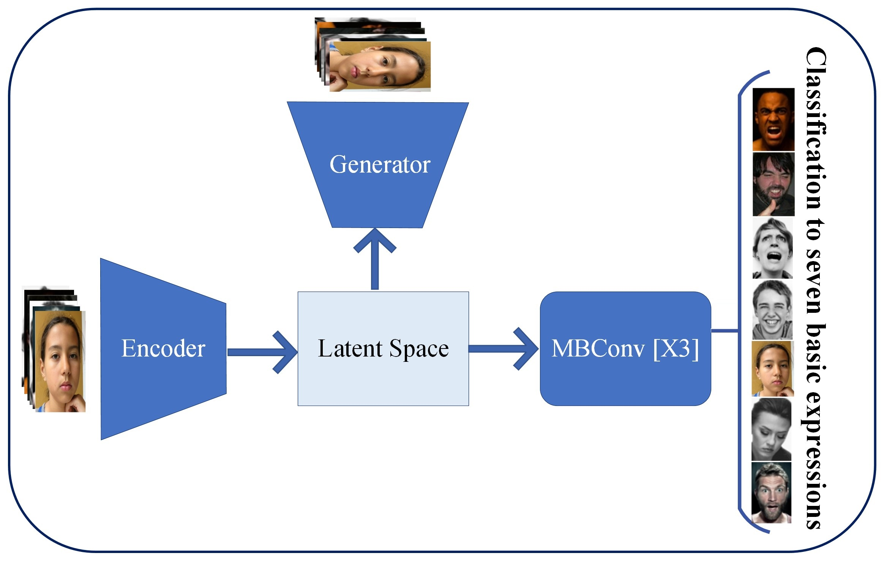
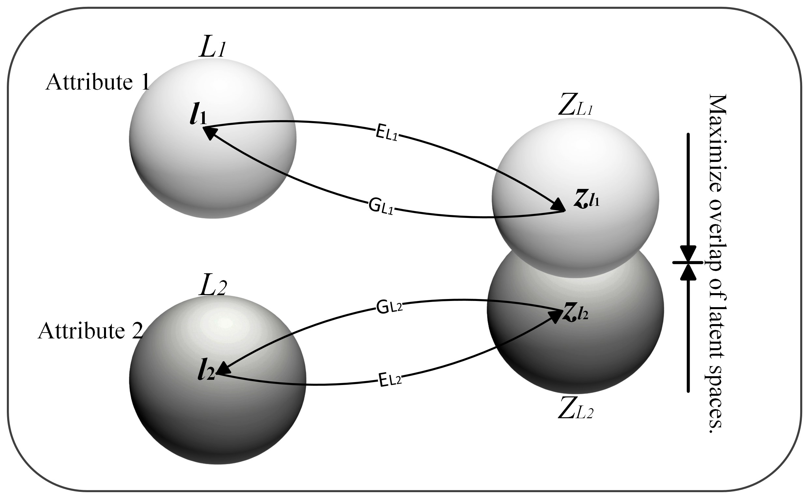

{kind=link}

SynthShield: Leveraging Synthetic Distributions to Enhance Privacy Against Membership Inference
Aryan Seth, Vishnu Hari
Under Review at Privacy Preserving Workshop at AAAI-25
I am an undergraduate final year student majoring in Computer Science from BITS Pilani, Pilani Campus. At present I am working on my Bachelor's Thesis at DFKI Germany under Prof. Sebastian Vollmer on Information Sharing in Structural Causal Bandits.
I am also presently mentored by Prof. Pratik Narang at BITS, where I am working on Alignment and Fairness in Deep Learning models.
In the past, I have had the pleasure of working under Prof. Asim Tewari where I worked on Transfer Learning to mitigate Chatter in CNC Machines. I also had the opportunity to work under Prof. Arun K Somani where I worked on Training Free Neural Architecture Search for hybrid CNN-Transformer Architectures.
My interests lie in mitigating the risks of Modern Deep Learning. Through this motivation, I work in fairness, model-based privacy, and causal inference. I am also interested in information-theoretic foundations of Machine Learning, and spend time studying allied fields such as Grokking and Unlearning.
Email / CV / Google Scholar / Twitter / Github / Privacy Policy
(Hover over the image to magnify it)
* denotes joint first authorship

Aryan Seth, Vishnu Hari
Under Review at Privacy Preserving Workshop at AAAI-25

Syed Sameen Ahmad Rizvi*, Aryan Seth*, Jagat Sesh Challa, Pratik Narang
IEEE Open Journal of the Computer Society, 2024

Syed Sameen Ahmad Rizvi*, Aryan Seth*, Pratik Narang
International Conference on Pattern Recognition-24

Syed Sameen Ahmad Rizvi*, Aryan Seth*, Pratik Narang
AAAI Conference on Artificial Intelligence
Loading latest posts...
Loading updates...
Website template borrowed from Jon Barron and Chaitanya Kapoor.